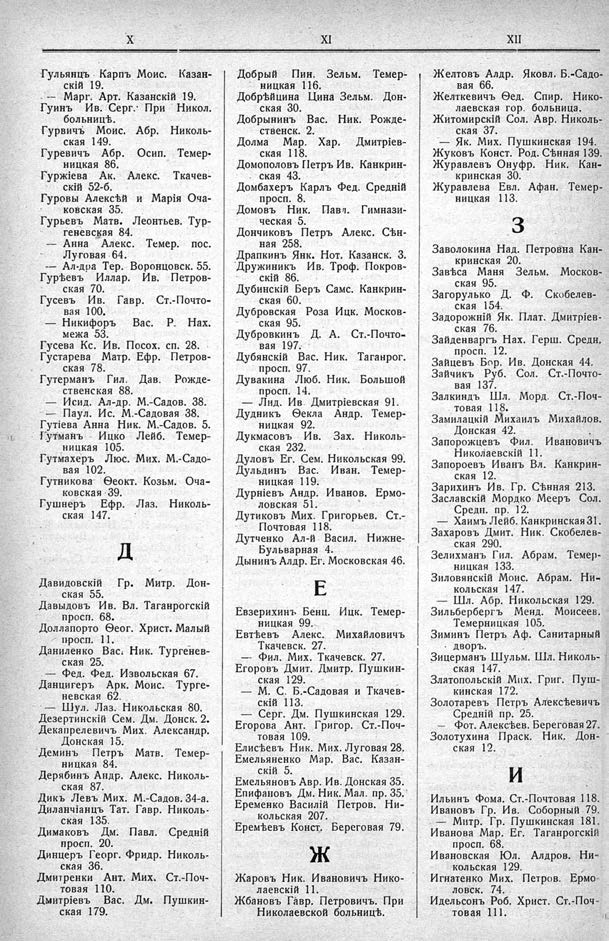

Лист источника 348
Скан

Распознанный текст
X
Гульянцъ Карпъ Моис. Казан-
скій 19.
— Марг. Арт. Казанскій 19.
Гуинъ Ив. Серг. При Никол.
больницѣ.
Гурвичъ Моис. Абр. Николь-
ская 149.
Гуревичъ Абр. Осип. Темер-
ницкая 86.
Гуржіева Ак. Алекс. Ткачев-
скій 52-б.
Гуровы Алексѣй и Марія Оча-
ковская 35.
Гурьевъ Матв. Леонтьев. Тур-
геневская 84.
— Анна Алекс. Темер. пос.
Луговая 64.
— Ал-дра Тер. Воронцовск. 55.
Гурѣевъ Иллар. Ив. Петров-
ская 70.
Гусевъ Ив. Гавр. Ст.-Почто-
вая 100.
— Никифоръ Вас. Р. Нах.
межа 53.
Гусева Кс. Ив. Посох. сп. 28.
Густарева Матр. Ефр. Петров-
ская 78.
Гутерманъ Гил. Дав. Рожде-
ственская 88.
— Исид. Ал-др. М.-Садов. 38.
— Паул. Ис. М.-Садовая 38.
Гутіева Анна Ник. М.-Садов. 5.
Гутманъ Ицко Лейб. Темер-
ницкая 105.
Гутмахеръ Люс. Мих. М.-Садо-
вая 102.
Гутникова Ѳеокт. Козьм. Оча-
ковская 39.
Гушнеръ Ефр. Лаз. Николь-
ская 147.
Д
Давидовскій Гр. Митр. Дон-
ская 55.
Давыдовъ Ив. Вл. Таганрогскій
просп. 68.
Доллапорто Ѳеог. Христ. Малый
просп. 11.
Даниленко Вас. Ник. Тургенев-
ская 25.
— Фед. Фед. Извольская 67.
Данцигеръ Арк. Моис. Турге-
невская 62.
— Шул. Лаз. Никольская 80.
Дезертинскій Сем. Дм. Донск. 2.
Декапрелевичъ Мих. Александр.
Донская 15.
Деминъ Петръ Матв. Темер-
ницкая 84.
Дерябинъ Андр. Алекс. Николь-
ская 87.
Дикъ Левъ Мих. М.-Садов. 34-а.
Диланчіанцъ Тат. Гавр. Николь-
ская 135.
Димаковъ Дм. Павл. Средній
просп. 20.
Динцеръ Георг. Фридр. Николь-
ская 36.
Дмитренки Ант. Мих. Ст.-Поч-
товая 110.
Дмитріевъ Вас. Дм. Пушкин-
ская 179.
XI
Добрый Пин. Зельм. Темер-
ницкая 116.
Добрѣйцина Цина Зельм. Дон-
ская 30.
Добрынинъ Вас. Ник. Рожде-
ственск. 2.
Долма Мар. Хар. Дмитріев-
ская 118.
Домополовъ Петръ Ив. Канкрин-
ская 43.
Домбахеръ Карлъ Фед. Средній
просп. 8.
Домовъ Ник. Павл. Гимнази-
ческая 5.
Дончиковъ Петръ Алекс. Сѣн-
ная 258.
Драпкинъ Янк. Нот. Казанск. 3.
Дружиникъ Ив. Троф. Покров-
скій 86.
Дубинскій Беръ Самс. Канкрин-
ская 60.
Дубровская Роза Ицк. Москов-
ская 95.
Дубровкинъ Д. А. Ст.-Почто-
вая 197.
Дубянскій Вас. Ник. Таганрог.
просп. 97.
Дувакина Люб. Ник. Большой
просп. 14.
— Лид. Ив. Дмитріевская 91.
Дудникъ Ѳекла Андр. Темер-
ницкая 92.
Дукмасовъ Ив. Зах. Николь-
ская 232.
Дуловъ Ег. Сем. Никольская 99.
Дульдинъ Вас. Иван. Темер-
ницкая 119.
Дурніевъ Андр. Иванов. Ермо-
ловская 51.
Дутиковъ Мих. Григорьев. Ст.-
Почтовая 118.
Дутченко Ал-й Васил. Нижне-
Бульварная 4.
Дынинъ Алдр. Ег. Московская 46.
Е
Евзерихинъ Бенц. Ицк. Темер-
ницкая 99.
Евтѣевъ Алекс. Михайловичъ
Ткачевск. 27.
— Фил. Мих. Ткачевск. 27.
Егоровъ Дмит. Дмитр. Пушкин-
ская 129.
— М. С. Б.-Садовая и Ткачев-
скій 113.
— Серг. Дм. Пушкинская 129.
Егорова Ант. Григор. Ст.-Поч-
товая 109.
Елисѣевъ Ник. Мих. Луговая 28.
Емельяненко Мар. Вас. Казан-
скій 5.
Емельяновъ Авр. Ив. Донская 35.
Епифановъ Дм. Ник. Мал. пр. 35.
Еременко Василій Петров. Ни-
кольская 207.
Еремѣевъ Конст. Береговая 79.
Ж
Жаровъ Ник. Ивановичъ Нико-
лаевскій 11.
Жбановъ Гавр. Петровичъ. При
Николаевской больницѣ.
XII
Желтовъ Алдр. Яковл. Б.-Садо-
вая 66.
Желткевичъ Ѳед. Спир. Нико-
лаевская гор. больница.
Житомирскій Сол. Авр. Николь-
ская 37.
— Як. Мих. Пушкинская 194.
Жуковъ Конст. Род. Сѣнная 139.
Журавлевъ Онуфр. Ник. Кан-
кринская 30.
Журавлева Евл. Афан. Темер-
ницкая 113.
З
Заволокина Над. Петровна Кан-
кринская 20.
Завѣса Маня Зельм. Москов-
ская 95.
Загорулько Д. Ф. Скобелев-
ская 154.
Задорожній Як. Плат. Дмитріев-
ская 76.
Зайденваргъ Нах. Герш. Средн.
просп. 12.
Зайцевъ Бор. Ив. Донская 44.
Зайчикъ Руб. Сол. Ст.-Почто-
вая 137.
Залкиндъ Шл. Морд. Ст.-Поч-
товая 118.
Замилацкій Михаилъ Михайлов.
Донская 42.
Запорожцевъ Фил. Ивановичъ
Николаевскій 11.
Запороевъ Иванъ Вл. Канкрин-
ская 12.
Зарихинъ Ив. Гр. Сѣнная 213.
Заславскій Мордко Мееръ Сол.
Средн. пр. 12.
— Хаимъ Лейб. Канкринская 31.
Захаровъ Дмит. Ник. Скобелев-
ская 290.
Зелихманъ Гил. Абрам. Темер-
ницкая 133.
Зиловянскій Моис. Абрам. Ни-
кольская 147.
— Шл. Абр. Никольская 129.
Зильбербергъ Менд. Моисеев.
Темерницкая 105.
Зиминъ Петръ Аф. Санитарный
дворъ.
Зицерманъ Шульм. Шл. Николь-
ская 147.
Златопольскій Мих. Григ. Пуш-
кинская 172.
Золотаревъ Петръ Алексѣевичъ
Средній пр. 25.
— Фот. Алексѣев. Береговая 27.
Золотухина Праск. Ник. Дон-
ская 12.
И
Ильинъ Фома. Ст.-Почтовая 118.
Ивановъ Гр. Ив. Соборный 79.
— Митр. Гр. Пушкинская 181.
Иванова Мар. Ег. Таганрогскій
просп. 68.
Ивановская Юл. Алдров. Ни-
кольская 129.
Игнатенко Мих. Петров. Ермо-
ловск. 74.
Идельсонъ Роб. Христ. Ст.-Поч-
товая 111.